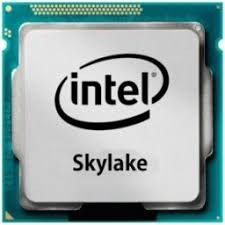

Это интересно
- Современные процессоры обладают вычислительной мощностью, в миллиарды раз превосходящие человеческую
Компоненты
В вычислительной подсистеме принято выделять оперативную память, процессор и графический ускоритель
Ответы на Ваши вопросы
Анна И.

Что значит индекс К у процессоров Intel?
Позволяет вручную увеличивать тактовую частоту процесора
Наши спонсоры рекомендуют:

i7-6700K
4.2GHZ+